Mobile Airline Application
A newly designed mobile application that optimises the users' experience of the airline booking process.
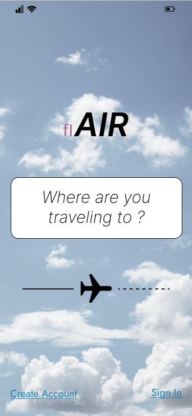
Overview
The mobile airline application project, flAIR, was my chosen case study for the professional diploma in user experience (UX) design. My decision was based on the following;
- In 2024, 72% of people prefer to book their flights online.*
- In 2023, 68% of online traffic for travel came from mobile, However desktop still accounted for 62% of sales.*
I led the design process and was responsible for conducting user research, identifying UX problems through in-depth analysis, visual and interactive design, prototyping and testing.
Sources: Statista
Goal
Design a product that could capitalise on the many poorly designed airline applications that fail to highlight critical user needs. Key objectives:
- Streamlined Booking Process - Quickly book flights, select seats, and add services directly from a mobile device.
- Loyalty Program Integration - Making it easier for frequent flyers to access and use their loyalty rewards and points.
- Payment Integration - Simplifying payment methods by integrating various and secure payment options
- User-Friendly Design - Ensuring the app is easy to navigate, with a smooth, intuitive interface for travelers of all ages and tech skills.
Role
Lead UX designer
Tools
Figma, Miro, Google Surveys
Team
2 UX designers
Timeline
May - Sep 2024 (16 weeks)
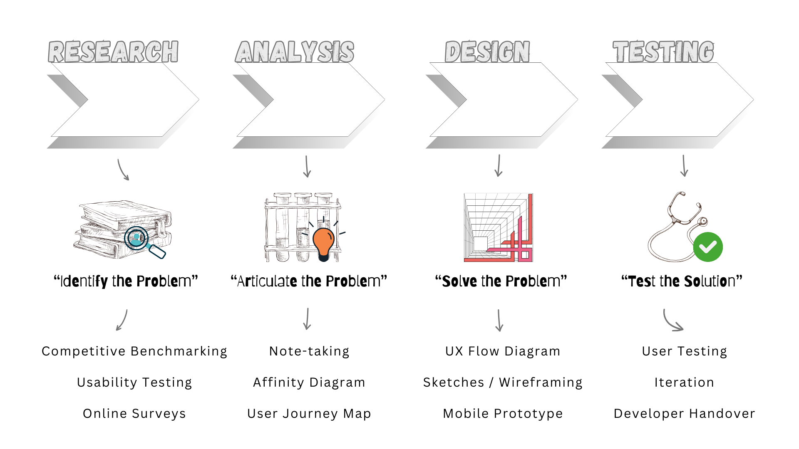
My UX Process
Competitive Benchmarking
My review of four (4) mobile airline and aggregator apps focused on established UX norms, helping me recognize both friction points and areas worth adopting.
Key questions: What is standard and familiar? What are they doing well? What could be improved?
The Pro's: Quick access to flight search, calendar date picker, progress bar, flight bundle options, seat selection, and secure payments.
The Hell No's: Busy screens obscuring information, excessive pop-ups, and repetitive up-selling.
I recognised that the flight booking process is chunked into stages and follows a logical, linear sequence, with dependencies. —e.g., personal details must be entered before payment.
Takeaway: I gained a clear understanding of what competitors offered, which allowed me to define strong design directions and identify opportunities to differentiate the app; particularly in navigation, use of language and communication, and building user confidence.
Next Up: Usability Testing
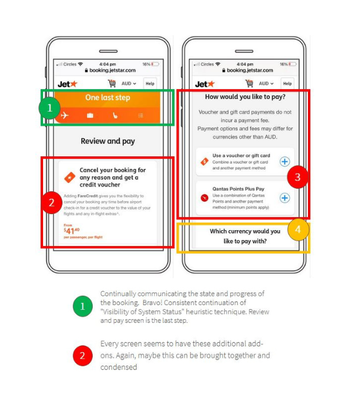
Competitive Benchmarking Study
Usability Testing
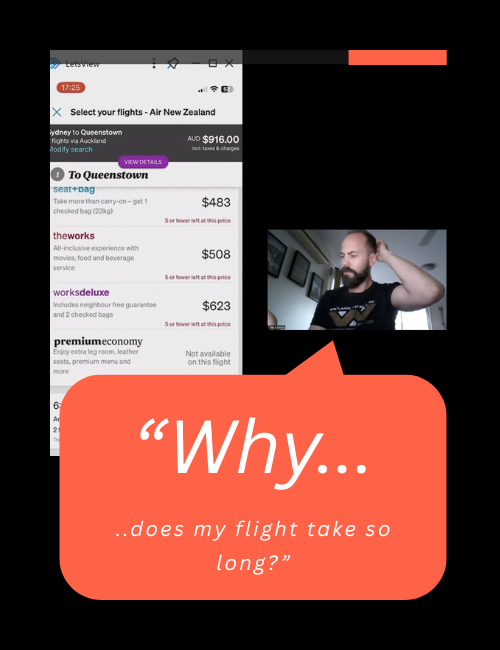
Direct User Quote
To build on my research and better understand user perspectives, I selected two (2) airlines from the benchmarking study and conducted usability testing.
I recruited, briefed, and interviewed three (3) independent participants, each testing both airline apps. I set up and recorded high-level remote mobile usability tests. My objectives:
- Understand user goals
- Identify what parts were clear
- Uncover pain points for improvement
User goals: Price, dates/times, loyalty programs
What worked: Flight options, clear details, all-inclusive pricing, filters, navigation, progress bar, feedback
What didn't: Clutter, lack of critical info, repetitive pop-ups, upsell screens that couldn’t be skipped
A follow-up interview revealed a major pain point. During the final stages of the booking, the user discovered an unexpectedly long layover that had not been made clear earlier, which caused frustration and led them to state: "I would have abandoned the booking process".
Takeaway: Users responded well to search and selection screens but became frustrated in the mid-to-final stages due to repetition and deal breaker pain points. Streamlining these stages presents a clear opportunity to minimise user frustration, prevent drop-off and improve conversion.
Next Up: Analysing the Research
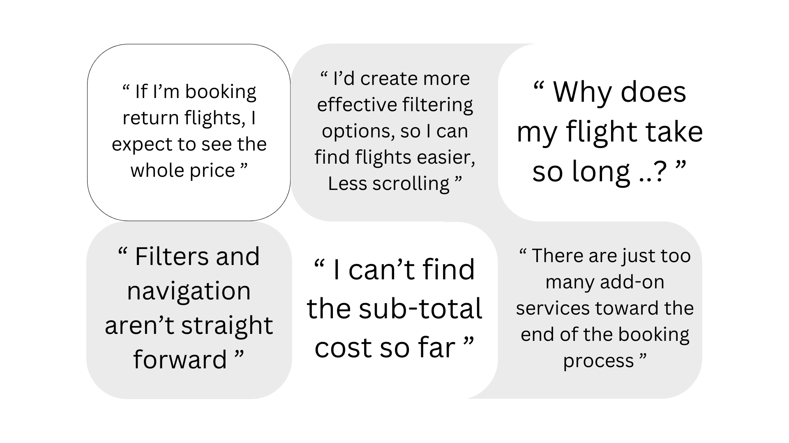
User Quotes
Affinity Diagramming
Collaborating with another UX researcher, we independently analyzed the research data. Afterward, we consolidated our findings in Miro, organizing the insights into four (4) key themes.
Positive & Negative Sentiment:
Users appreciated smooth navigation but were frustrated by slow booking flows and inconsistent UI elements.
Clarity of Communication:
Terms like “fare class” confused users, while others valued the simplicity of "return flights" and "review and pay".
Mental Models:
Several users expected key features, such as filtering to be more easily accessible and anticipated that flight listings would default to sorting by departure time.
Pain Points:
A frequent pain point for users was the challenge of finding essential flight details, particularly stopover information in relation to overall flight duration.
Takeaway: Affinity diagramming helped me transform raw data into organized insights. The resulting thematic clusters informed the user journey map, shaped the problem definition, and guided subsequent design decisions.
Next Up: Designing a User-centered Solution
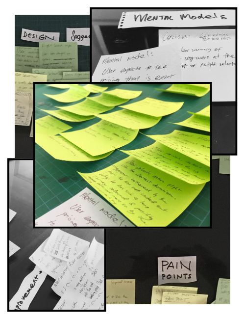
Affinity Diagram: Identifying Themes/Patterns
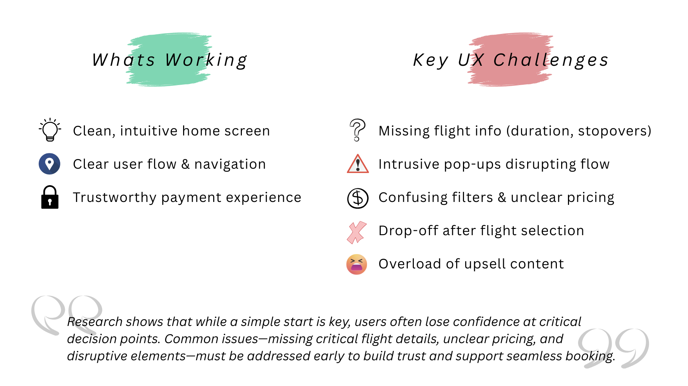
The UX Problem
UX Flow Diagram
UX Flow - Miro Animation
The goal was to design a complete and intuitive user flow (Miro) that aligned both with user expectations and business objectives, while minimising friction throughout the experience.
To achieve this, I focused on removing unnecessary steps that could confuse or frustrate users and refining micro-interactions. Through this approach, I identified opportunities to streamline interactions and reduce complexity.
- For example, if a user selects a one-way trip, the return date field is hidden, eliminating irrelevant input.
- I ensured a logical progression through the booking process to avoid unnecessary back-and-forth, such as toggling between flight selection and seat selection screens.
I also introduced ways to improve the overall UX by allowing users to skip non-mandatory sections if they were not relevant to their needs.
Takeaway: Through iterative design of the UX flow, I reduced user interactions by 8% (from 37 to 34 touchpoints). Usability testing of the prototype validated that this streamlined flow can improve efficiency, with users showing faster task completion and fewer errors.
Note: For educational purposes, the "user easy path" focuses solely on the most direct booking path.
Next Step: Sketches and Wireframing
Sketches
Next, I created a series of low-fidelity sketches and wireframes to accelerate decision-making through rapid visualization. These sketches outlined the key screens and controls for the booking process and laid the foundation for a functional prototype.
I began by defining the Information Architecture (IA), which provided the foundation for screen structure, content hierarchy, and consistent language. My initial sketches were quick and iterative, allowing me to quickly explore layout concepts and interaction patterns. This approach resulted in a structured, bare-bones low-fidelity interface that captured core functionality without the distraction of visual details.
User feedback highlighted the value of clear visual cues; especially progress bars, labeled steps, and prominent CTAs. I incorporated these into the sketches to improve clarity and build user confidence, offering a replicable approach for multi-step experiences.
With the core layout in place, I integrated the predefined user flow to ensure each screen supported a clear, seamless task progression. User interviews showed that reducing the number of fields per screen reduced cognitive load and abandonment rates, so I designed layouts with minimalism in mind; focusing on one task per screen to streamline the experience.
I reused sketch templates and applied overlay cut-outs, which helped save time and effort. I learned that I could easily sketch, modify, or discard ideas allowing for quick iterations.
Takeaway: I came back to the sketches throughout the entire design process. The sketches acted as a living reference to ensure that the evolving UI remained grounded in user behavior, task flows, and validated design principles.
Next steps: Prototyping with Figma & UI Design
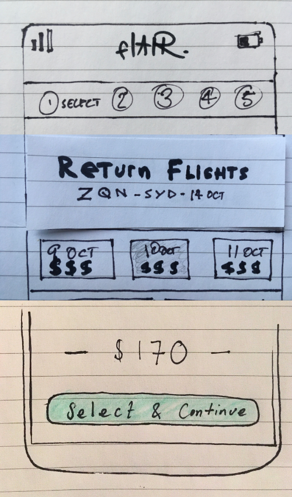
UX Sketches:
Progress Bar, Labeled Steps & Prominent CTA's
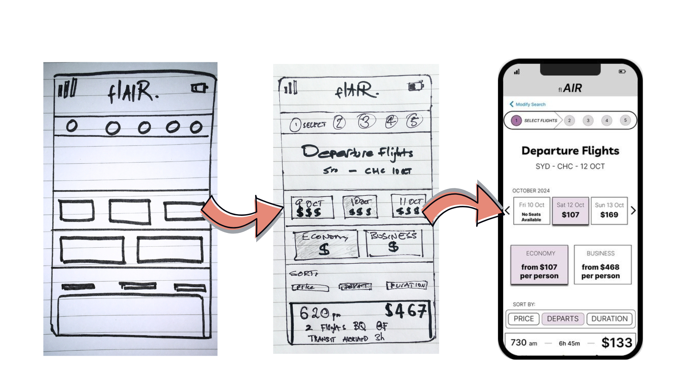
UX Sketch Progression
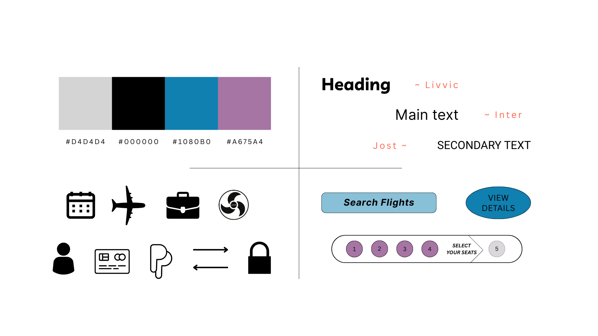
UI Style Guide
Usability Testing 2.0
I conducted usability testing with two (2) new participants. The testing focused on the effectiveness of the system design/UI, and validating design changes aimed at resolving five critical UX issues: missing flight information, intrusive pop-ups, unclear pricing, user flow drop-off, and excessive upsell content.
Testing revealed clear improvements:
- Users quickly found essential flight details that were previously overlooked
- Intrusive pop-ups were revised or removed, resulting in a smoother experience
- Pricing was easier to understand with consistent updates and clearer breakdowns
- The updated flow reduced user hesitation and drop-off points
- Upsell content was better integrated and less overwhelming
Final refinements improved layout and navigation. The progress bar’s arrow caused confusion by implying users were a step ahead. To resolve this, the current step was changed to a neutral capsule shape, and previous steps were adjusted for clarity with reduced opacity and increased contrast, enhancing overall usability.
Next steps: Wrap Up: Learnings & Next Steps
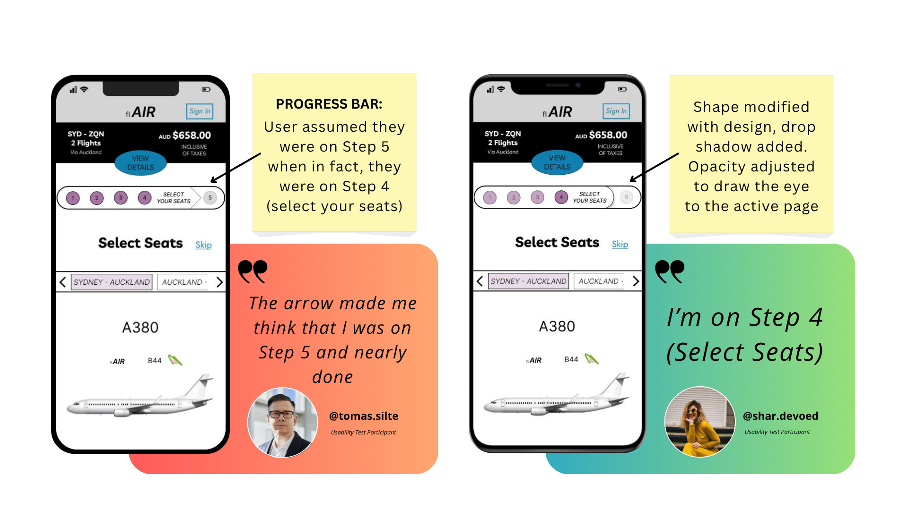
Design Iteration
Learnings
A key takeaway is the importance of centering user goals in both design and research. Too often, user intent; like quickly finding the right flight at the right price, is assumed rather than deeply understood.
This process reinforced that user goals must be actively explored through research and not be overlooked or treated as secondary.
For something as universally goal-driven as booking a flight, even small barriers can create frustration or drop-off. By grounding decisions in real user needs, we’re better equipped to build experiences that feel seamless, relevant, and ultimately more successful.
Next Steps
With major usability issues addressed, the next phase is about refining the experience further.
I'll move non-flight extras; like car rentals and travel insurance, to the end of the booking flow, after payment.
This keeps the core journey focused and friction-free, while still offering add-ons at a more appropriate moment.
I will also be looking at ways to further minimise touchpoints across the process; streamlining interactions without sacrificing clarity. The aim is to reduce cognitive load and maintain a fast, intuitive flow from start to finish.